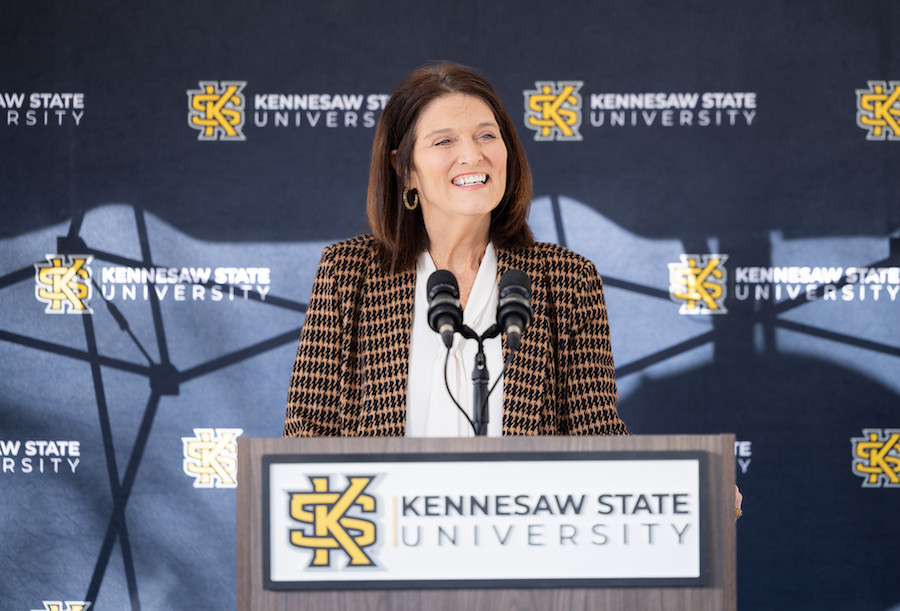
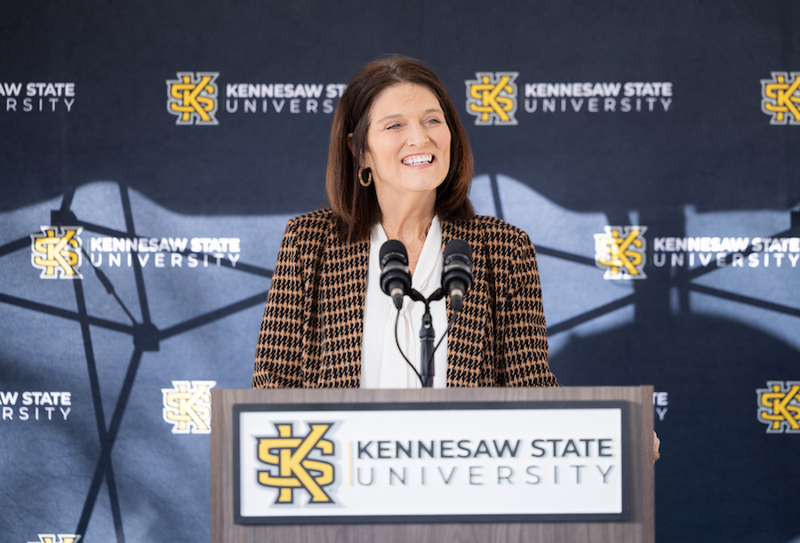

Center for Applied Research in Information Technology
About
Welcome to the Center for Applied Research in Information Technology (CARIT) website. The CARIT is a Research Center that provides high quality survey research, program evaluation, performance measurement, and experimental research using scientifically rigorous social science methods. to better interact with local businesses and communities. The CARIT is a valuable resource for faculty in need of assistance for research projects, grants, and contracts. In addition, community organizations and agencies can utilize the CARIT in a variety of areas such as program evaluation or community surveys.
The CARIT will provide an environment that focuses on facilitating an applied learning environment for KSU graduate and undergraduate students with hands-on research experience in the areas of data collection, data management and analysis. We hope that you will peruse the website to see what CARIT projects have been conducted or are in the works. You can also find information about the services available through CARIT.
Latest News
- Kennesaw State University to offer Master of Science in Artificial Intelligence
- Year Three of Ryan Co Era Begins at UAB
- Kennesaw State Tournament Begins Friday
- Kennesaw State breaks ground for interdisciplinary STEM building
- Kennesaw State's online degree programs nationally ranked by U.S. News
 
